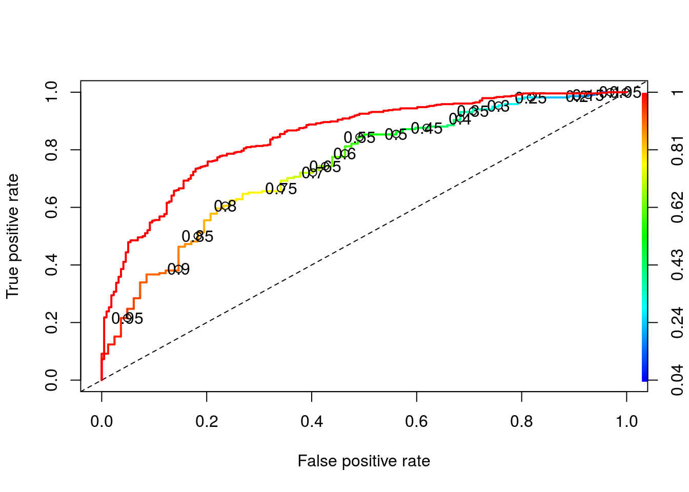
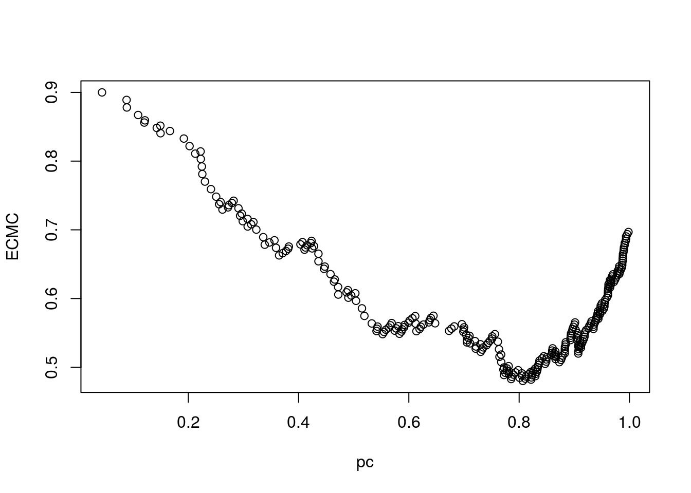

Dados sobre concessão numa instituição crédito alemã. Na página da disciplina há um arquivo com informações sobre as variáveis.
Início da análise
## Status_Account Duration Credit_History Purpose Credit_Amount
## 1 A11 6 A34 A43 1169
## 2 A12 48 A32 A43 5951
## Saving_Account Present_Employment_Since Installament_Rate
## 1 A65 A75 4
## 2 A61 A73 2
## Personal_Status_Sex Other_Debtors Present Residence_Since Property Age
## 1 A93 A101 4 A121 67 A143
## 2 A92 A101 2 A121 22 A143
## Other_Plans Number_Credits Job Number_Provider Telephone Foreign_Worker
## 1 A152 2 A173 1 A192 A201
## 2 A152 1 A173 1 A191 A201
## Status
## 1 1
## 2 2## Status_Account Duration Credit_History Purpose
## A11:274 Min. : 4.0 A30: 40 A43 :280
## A12:269 1st Qu.:12.0 A31: 49 A40 :234
## A13: 63 Median :18.0 A32:530 A42 :181
## A14:394 Mean :20.9 A33: 88 A41 :103
## 3rd Qu.:24.0 A34:293 A49 : 97
## Max. :72.0 A46 : 50
## (Other): 55
## Credit_Amount Saving_Account Present_Employment_Since Installament_Rate
## Min. : 250 A61:603 A71: 62 Min. :1.000
## 1st Qu.: 1366 A62:103 A72:172 1st Qu.:2.000
## Median : 2320 A63: 63 A73:339 Median :3.000
## Mean : 3271 A64: 48 A74:174 Mean :2.973
## 3rd Qu.: 3972 A65:183 A75:253 3rd Qu.:4.000
## Max. :18424 Max. :4.000
##
## Personal_Status_Sex Other_Debtors Present Residence_Since
## A91: 50 A101:907 Min. :1.000 A121:282
## A92:310 A102: 41 1st Qu.:2.000 A122:232
## A93:548 A103: 52 Median :3.000 A123:332
## A94: 92 Mean :2.845 A124:154
## 3rd Qu.:4.000
## Max. :4.000
##
## Property Age Other_Plans Number_Credits Job
## Min. :19.00 A141:139 A151:179 Min. :1.000 A171: 22
## 1st Qu.:27.00 A142: 47 A152:713 1st Qu.:1.000 A172:200
## Median :33.00 A143:814 A153:108 Median :1.000 A173:630
## Mean :35.55 Mean :1.407 A174:148
## 3rd Qu.:42.00 3rd Qu.:2.000
## Max. :75.00 Max. :4.000
##
## Number_Provider Telephone Foreign_Worker Status
## Min. :1.000 A191:596 A201:963 Min. :1.0
## 1st Qu.:1.000 A192:404 A202: 37 1st Qu.:1.0
## Median :1.000 Median :1.0
## Mean :1.155 Mean :1.3
## 3rd Qu.:1.000 3rd Qu.:2.0
## Max. :2.000 Max. :2.0
## dados$Status <- factor(dados$Status)
levels(dados$Status) <- c('Good', 'Bad')
dados$Status <- relevel(dados$Status, ref = 'Bad')O motivo de redefinir o nível de referência é para modelarmos a probabilidade de um bom pagador. Para isso, devemos definir o nível de referência como o outro (Bad).
## [1] 1000 21## Bad Good
## 300 700Exercício - Fazer uma análise descritiva (uni e bivariada), buscando avaliar, de forma preliminar por meio de gráficos e medidas resumo, a relação entre as covariáveis e a resposta.
Vamos separar, aleatoriamente, a base em duas: uma para o ajuste do modelo (com 700 observações) e outra para validação (com 300 observações).
indices é um vetor com números de 1 a 1000 numa sequência aleatória.
dataframe com as 700 linhas para ajuste.
dataframe com 300 linhas, apenas para validação.
Vamos ajustar um modelo de regressão logística, com as covariáveis selecionadas via Backward(AIC)
## Start: AIC=699.65
## Status ~ Status_Account + Duration + Credit_History + Purpose +
## Credit_Amount + Saving_Account + Present_Employment_Since +
## Installament_Rate + Personal_Status_Sex + Other_Debtors +
## Present + Residence_Since + Property + Age + Other_Plans +
## Number_Credits + Job + Number_Provider + Telephone + Foreign_Worker
##
## Df Deviance AIC
## - Job 3 602.38 694.38
## - Present 1 602.09 698.09
## - Present_Employment_Since 4 608.41 698.41
## - Property 1 602.55 698.55
## - Age 2 605.03 699.03
## - Number_Provider 1 603.19 699.19
## - Number_Credits 1 603.36 699.36
## - Telephone 1 603.39 699.39
## <none> 601.65 699.65
## - Other_Debtors 2 605.68 699.68
## - Personal_Status_Sex 3 608.41 700.41
## - Duration 1 604.67 700.67
## - Residence_Since 3 608.96 700.96
## - Other_Plans 2 608.43 702.43
## - Foreign_Worker 1 606.61 702.61
## - Credit_Amount 1 607.20 703.20
## - Purpose 9 628.59 708.59
## - Saving_Account 4 620.53 710.53
## - Credit_History 4 623.35 713.35
## - Installament_Rate 1 619.61 715.61
## - Status_Account 3 659.31 751.31
##
## Step: AIC=694.38
## Status ~ Status_Account + Duration + Credit_History + Purpose +
## Credit_Amount + Saving_Account + Present_Employment_Since +
## Installament_Rate + Personal_Status_Sex + Other_Debtors +
## Present + Residence_Since + Property + Age + Other_Plans +
## Number_Credits + Number_Provider + Telephone + Foreign_Worker
##
## Df Deviance AIC
## - Present 1 602.68 692.68
## - Present_Employment_Since 4 608.82 692.82
## - Property 1 603.34 693.34
## - Age 2 605.75 693.75
## - Number_Provider 1 604.01 694.01
## - Number_Credits 1 604.12 694.12
## - Other_Debtors 2 606.30 694.30
## <none> 602.38 694.38
## - Personal_Status_Sex 3 609.00 695.00
## - Telephone 1 605.38 695.38
## - Residence_Since 3 609.38 695.38
## - Duration 1 605.61 695.61
## - Other_Plans 2 608.92 696.92
## - Foreign_Worker 1 607.31 697.31
## - Credit_Amount 1 607.34 697.34
## - Purpose 9 630.50 704.50
## - Saving_Account 4 620.97 704.97
## - Credit_History 4 624.15 708.15
## - Installament_Rate 1 619.84 709.84
## - Status_Account 3 660.23 746.23
##
## Step: AIC=692.68
## Status ~ Status_Account + Duration + Credit_History + Purpose +
## Credit_Amount + Saving_Account + Present_Employment_Since +
## Installament_Rate + Personal_Status_Sex + Other_Debtors +
## Residence_Since + Property + Age + Other_Plans + Number_Credits +
## Number_Provider + Telephone + Foreign_Worker
##
## Df Deviance AIC
## - Present_Employment_Since 4 609.20 691.20
## - Property 1 603.79 691.79
## - Age 2 606.08 692.08
## - Number_Provider 1 604.26 692.26
## - Number_Credits 1 604.37 692.37
## - Other_Debtors 2 606.67 692.67
## <none> 602.68 692.68
## - Personal_Status_Sex 3 609.16 693.16
## - Residence_Since 3 609.62 693.62
## - Telephone 1 605.75 693.75
## - Duration 1 605.77 693.77
## - Other_Plans 2 608.92 694.92
## - Foreign_Worker 1 607.48 695.48
## - Credit_Amount 1 607.88 695.88
## - Purpose 9 630.68 702.68
## - Saving_Account 4 621.43 703.43
## - Credit_History 4 624.66 706.66
## - Installament_Rate 1 620.10 708.10
## - Status_Account 3 660.24 744.24
##
## Step: AIC=691.2
## Status ~ Status_Account + Duration + Credit_History + Purpose +
## Credit_Amount + Saving_Account + Installament_Rate + Personal_Status_Sex +
## Other_Debtors + Residence_Since + Property + Age + Other_Plans +
## Number_Credits + Number_Provider + Telephone + Foreign_Worker
##
## Df Deviance AIC
## - Property 1 609.90 689.90
## - Number_Provider 1 610.61 690.61
## - Number_Credits 1 610.88 690.88
## - Age 2 613.09 691.09
## <none> 609.20 691.20
## - Other_Debtors 2 613.48 691.48
## - Duration 1 611.81 691.81
## - Residence_Since 3 616.13 692.13
## - Other_Plans 2 614.66 692.66
## - Personal_Status_Sex 3 616.86 692.86
## - Telephone 1 613.05 693.05
## - Foreign_Worker 1 613.68 693.68
## - Credit_Amount 1 614.48 694.48
## - Purpose 9 637.03 701.03
## - Saving_Account 4 628.23 702.23
## - Credit_History 4 631.52 705.52
## - Installament_Rate 1 626.43 706.43
## - Status_Account 3 667.60 743.60
##
## Step: AIC=689.9
## Status ~ Status_Account + Duration + Credit_History + Purpose +
## Credit_Amount + Saving_Account + Installament_Rate + Personal_Status_Sex +
## Other_Debtors + Residence_Since + Age + Other_Plans + Number_Credits +
## Number_Provider + Telephone + Foreign_Worker
##
## Df Deviance AIC
## - Number_Provider 1 611.23 689.23
## - Number_Credits 1 611.34 689.34
## - Age 2 613.56 689.56
## <none> 609.90 689.90
## - Other_Debtors 2 614.23 690.23
## - Residence_Since 3 616.78 690.78
## - Duration 1 612.87 690.87
## - Personal_Status_Sex 3 617.63 691.63
## - Telephone 1 614.17 692.17
## - Other_Plans 2 616.32 692.32
## - Foreign_Worker 1 614.36 692.36
## - Credit_Amount 1 614.98 692.98
## - Purpose 9 637.39 699.39
## - Saving_Account 4 629.54 701.54
## - Credit_History 4 632.49 704.49
## - Installament_Rate 1 626.71 704.71
## - Status_Account 3 669.31 743.31
##
## Step: AIC=689.23
## Status ~ Status_Account + Duration + Credit_History + Purpose +
## Credit_Amount + Saving_Account + Installament_Rate + Personal_Status_Sex +
## Other_Debtors + Residence_Since + Age + Other_Plans + Number_Credits +
## Telephone + Foreign_Worker
##
## Df Deviance AIC
## - Number_Credits 1 612.81 688.81
## - Age 2 614.86 688.86
## <none> 611.23 689.23
## - Other_Debtors 2 615.25 689.25
## - Personal_Status_Sex 3 617.84 689.84
## - Residence_Since 3 617.88 689.88
## - Duration 1 614.05 690.05
## - Telephone 1 615.45 691.45
## - Other_Plans 2 617.46 691.46
## - Foreign_Worker 1 615.66 691.66
## - Credit_Amount 1 615.98 691.98
## - Purpose 9 638.97 698.97
## - Saving_Account 4 630.73 700.73
## - Installament_Rate 1 627.46 703.46
## - Credit_History 4 634.81 704.81
## - Status_Account 3 670.80 742.80
##
## Step: AIC=688.81
## Status ~ Status_Account + Duration + Credit_History + Purpose +
## Credit_Amount + Saving_Account + Installament_Rate + Personal_Status_Sex +
## Other_Debtors + Residence_Since + Age + Other_Plans + Telephone +
## Foreign_Worker
##
## Df Deviance AIC
## <none> 612.81 688.81
## - Age 2 616.87 688.87
## - Other_Debtors 2 616.92 688.92
## - Residence_Since 3 619.14 689.14
## - Personal_Status_Sex 3 619.16 689.16
## - Duration 1 615.48 689.48
## - Telephone 1 616.73 690.73
## - Other_Plans 2 619.22 691.22
## - Credit_Amount 1 617.36 691.36
## - Foreign_Worker 1 617.50 691.50
## - Purpose 9 641.00 699.00
## - Saving_Account 4 632.00 700.00
## - Installament_Rate 1 628.52 702.52
## - Credit_History 4 634.98 702.98
## - Status_Account 3 672.15 742.15## ajuste.y dadosajuste.Status
## 4 1 Good
## 677 1 Good
## 922 1 Good
## 848 1 Good
## 49 1 GoodApenas para conferir para quais categorias está atribuindo 0 e 1.
##
## Call:
## glm(formula = Status ~ Status_Account + Duration + Credit_History +
## Purpose + Credit_Amount + Saving_Account + Installament_Rate +
## Personal_Status_Sex + Other_Debtors + Residence_Since + Age +
## Other_Plans + Telephone + Foreign_Worker, family = binomial,
## data = dadosajuste)
##
## Deviance Residuals:
## Min 1Q Median 3Q Max
## -2.8440 -0.6515 0.3564 0.6846 2.2711
##
## Coefficients:
## Estimate Std. Error z value Pr(>|z|)
## (Intercept) -8.019e-01 8.481e-01 -0.945 0.344410
## Status_AccountA12 2.810e-01 2.611e-01 1.076 0.281909
## Status_AccountA13 1.592e+00 4.912e-01 3.242 0.001187 **
## Status_AccountA14 1.795e+00 2.731e-01 6.572 4.96e-11 ***
## Duration -1.848e-02 1.128e-02 -1.638 0.101496
## Credit_HistoryA31 1.938e-01 6.355e-01 0.305 0.760376
## Credit_HistoryA32 9.175e-01 5.108e-01 1.796 0.072449 .
## Credit_HistoryA33 6.634e-01 5.636e-01 1.177 0.239134
## Credit_HistoryA34 1.772e+00 5.376e-01 3.297 0.000978 ***
## PurposeA41 1.902e+00 4.780e-01 3.980 6.89e-05 ***
## PurposeA410 2.258e+00 1.193e+00 1.892 0.058452 .
## PurposeA42 8.549e-01 3.099e-01 2.759 0.005805 **
## PurposeA43 8.869e-01 2.960e-01 2.996 0.002732 **
## PurposeA44 7.624e-01 9.945e-01 0.767 0.443313
## PurposeA45 1.152e-01 6.245e-01 0.184 0.853633
## PurposeA46 8.966e-02 4.917e-01 0.182 0.855317
## PurposeA48 1.283e+00 1.289e+00 0.996 0.319229
## PurposeA49 9.045e-01 3.927e-01 2.303 0.021271 *
## Credit_Amount -1.188e-04 5.613e-05 -2.117 0.034276 *
## Saving_AccountA62 7.181e-01 3.492e-01 2.057 0.039730 *
## Saving_AccountA63 1.049e+00 5.259e-01 1.995 0.046027 *
## Saving_AccountA64 1.466e+00 5.890e-01 2.488 0.012829 *
## Saving_AccountA65 9.522e-01 3.193e-01 2.982 0.002865 **
## Installament_Rate -4.138e-01 1.071e-01 -3.863 0.000112 ***
## Personal_Status_SexA92 -1.922e-01 4.801e-01 -0.400 0.688964
## Personal_Status_SexA93 3.955e-01 4.711e-01 0.840 0.401115
## Personal_Status_SexA94 2.730e-01 5.669e-01 0.482 0.630055
## Other_DebtorsA102 -3.728e-01 5.014e-01 -0.743 0.457252
## Other_DebtorsA103 9.604e-01 5.468e-01 1.756 0.079007 .
## Residence_SinceA122 -4.234e-01 3.016e-01 -1.404 0.160360
## Residence_SinceA123 -5.220e-01 2.862e-01 -1.824 0.068152 .
## Residence_SinceA124 -1.167e+00 5.224e-01 -2.233 0.025536 *
## AgeA142 -5.097e-02 5.029e-01 -0.101 0.919286
## AgeA143 5.326e-01 3.102e-01 1.717 0.086008 .
## Other_PlansA152 6.153e-01 2.687e-01 2.290 0.022043 *
## Other_PlansA153 1.032e+00 5.714e-01 1.806 0.070928 .
## TelephoneA192 4.423e-01 2.251e-01 1.965 0.049401 *
## Foreign_WorkerA202 1.588e+00 8.357e-01 1.900 0.057407 .
## ---
## Signif. codes: 0 '***' 0.001 '**' 0.01 '*' 0.05 '.' 0.1 ' ' 1
##
## (Dispersion parameter for binomial family taken to be 1)
##
## Null deviance: 868.33 on 699 degrees of freedom
## Residual deviance: 612.81 on 662 degrees of freedom
## AIC: 688.81
##
## Number of Fisher Scoring iterations: 5Resumo do ajuste.
Probabilidades estimadas para os indivíduos da base de ajuste;
Probabilidades estimadas para os indivíduos da base de ajuste;
Probabilidades estimadas para os indivíduos da base de validação.
## 5 6 10
## 167 835 336Usando o modelo ajustado para classificação dos clientes da base de validação.
Como fica se usarmos \(pc=0,5\) como ponto de corte para classificação, ou seja: Classificar como mau pagador se \(p < 0,5\); Classificar como bom pagador se \(p >= 0,5\).
Vamos cruzar realidade e predição para diferentes pontos de corte.
classp0.5 <- factor(ifelse(pval2 >= 0.5, 'PredGood', 'PredBad'))
head(classp0.5, n = 3) # Classificações usando o ponto de corte 0,5.## 5 6 10
## PredBad PredGood PredBad
## Levels: PredBad PredGood## pval2 classp0.5
## 5 0.1667900 PredBad
## 6 0.8347193 PredGood
## 10 0.3359807 PredBadClassificando como “Devedores” indivíduos com \(p > 0,5\).
##
## classp0.5 Bad Good
## PredBad 36 32
## PredGood 46 186Vamos estimar a sensibilidade e a especificidade referentes a esta regra de decisão.
sensp0.5 <- sum(classp0.5 == 'PredGood' & dadosvalid$Status == 'Good')/sum(dadosvalid$Status == 'Good')
sensp0.5## [1] 0.853211espec0.5 <- sum(classp0.5 == 'PredBad' & dadosvalid$Status == 'Bad')/sum(dadosvalid$Status == 'Bad')
espec0.5## [1] 0.4390244E se usássemos os dados de ajuste para calcular a sensibilidade e a especificidade?
classp0.5aj <- factor(ifelse(paj2 >= 0.5, 'PredGood', 'PredBad'))
sensp0.5aj <- sum(classp0.5aj == 'PredGood' & dadosajuste$Status == 'Good')/sum(dadosajuste$Status == 'Good')
sensp0.5aj## [1] 0.8921162espec0.5aj <- sum(classp0.5aj == 'PredBad' & dadosajuste$Status == 'Bad')/sum(dadosajuste$Status == 'Bad')
espec0.5aj## [1] 0.5825688Observe que ao usar os dados de ajuste, tanto a sensibilidade quanto a especificidade são maiores. Isso reforça a importância de se usar dados de validação para avaliar adequadamente o desempenho preditivo do modelo.
Observe que ao usar \(pc = 0,5\), temos uma regra de classificação com elevada sensibilidade (0,84), mas baixa especificidade (0,49). Assim, a capacidade de se predizer um bom pagador é alta, mas o poder preditivo para maus pagadores é baixo (vamos acertar aproximadamente metade das vezes).
E se relaxássemos, classificando como pagador (e concedendo empréstimo a) todo indivíduo com \(p>=0,3\)?
## 5 6 10
## PredBad PredGood PredGood
## Levels: PredBad PredGood##
## classp0.3 Bad Good
## PredBad 20 11
## PredGood 62 207sensp0.3 <- sum(classp0.3 == 'PredGood' & dadosvalid$Status == 'Good')/sum(dadosvalid$Status == 'Good')
sensp0.3 ## [1] 0.9495413espec0.3 <- sum(classp0.3 == 'PredBad' & dadosvalid$Status == 'Bad')/sum(dadosvalid$Status == 'Bad')
espec0.3 ## [1] 0.2439024Ao tomar \(pc=0,3\), a sensibilidade aumenta ainda mais, mas a especificidade (probabilidade de classificar corretamente um mau pagador) fica baixíssima.
E se fossemos mais rigorosos, classificando como pagador (e concedendo empréstimo a) apenas indivíduos com \(p>=0,7\)?
## 5 6 10
## PredBad PredGood PredBad
## Levels: PredBad PredGoodClassificando como “Devedores” indivíduos com \(p>0,7\).
##
## classp0.7 Bad Good
## PredBad 49 61
## PredGood 33 157sensp0.7 <- sum(classp0.7 == 'PredGood' & dadosvalid$Status == 'Good')/sum(dadosvalid$Status == 'Good')
sensp0.7## [1] 0.7201835espec0.7 <- sum(classp0.7 == 'PredBad' & dadosvalid$Status == 'Bad')/sum(dadosvalid$Status == 'Bad')
espec0.7## [1] 0.597561Para essa regra, temos sensibilidade e especificidade aproximadamente iguais.
Botando num quadro:
datacomp <- data.frame(c(sensp0.3,sensp0.5,sensp0.7),
c(espec0.3,espec0.5,espec0.7))
names(datacomp)<-c('Sensibilidade','Especificidade')
rownames(datacomp)<-c('pc=0,3','pc=0,5','pc=0,7')
datacomp## Sensibilidade Especificidade
## pc=0,3 0.9495413 0.2439024
## pc=0,5 0.8532110 0.4390244
## pc=0,7 0.7201835 0.5975610Vamos usar o pacote ROCR para calcular algumas medidas de qualidade preditiva.
## Loading required package: ROCR## Loading required package: gplots##
## Attaching package: 'gplots'## The following object is masked from 'package:stats':
##
## lowessVamos plotar a curva ROC
tpr: True Positive Rate; fpr: False Positive Rate.
plot(perf, colorize=TRUE, print.cutoffs.at=seq(0.05,0.95,0.05), lwd = 2)
abline(0,1, lty = 2)
performance(pred, 'auc')## An object of class "performance"
## Slot "x.name":
## [1] "None"
##
## Slot "y.name":
## [1] "Area under the ROC curve"
##
## Slot "alpha.name":
## [1] "none"
##
## Slot "x.values":
## list()
##
## Slot "y.values":
## [[1]]
## [1] 0.7426158
##
##
## Slot "alpha.values":
## list()# Extraindo a área sob a curva.
#
# Como ficaria a curva ROC se usássemos os dados de ajuste para sua construção?
predaj <- prediction(paj2, dadosajuste$Status)
perfaj <- performance(predaj, measure = "tpr" , x.measure = "fpr")
plot(perfaj, col = 'red', lwd = 2, add = T)
## An object of class "performance"
## Slot "x.name":
## [1] "None"
##
## Slot "y.name":
## [1] "Area under the ROC curve"
##
## Slot "alpha.name":
## [1] "none"
##
## Slot "x.values":
## list()
##
## Slot "y.values":
## [[1]]
## [1] 0.8472915
##
##
## Slot "alpha.values":
## list()Agora, vamos supor que o custo de classificar um mau pagador como bom seja cinco vezes o de classificar um bom como mau \((C(M|B) = 3*C(B|M))\). Assim, para uma regra de classificação com probabilidades de classificação incorretas P(M|B) e P(B|M), o cusro esperado de má classificação (ECMC) fica dado por:
\(ECMC = C(M|B)*P(M|B)*P(B) + C(B|M)*P(B|M)*P(M)\)
Como na base toda há 30% de maus pagadores, vamos tomar \(P(B) = 0,3\); \(P(G) = 0,7\).
Assim, ECMC = 0.9P(M|B) + 0,7P(B|M). Vamos avaliar ECMC para diferentes regras.
perf2 <- performance(pred, measure = 'fpr', x.measure = 'fnr')
PMB <- perf2@y.values[[1]] # P(M|B) para os diferentes pontos de corte (pc)
PBM <- perf2@x.values[[1]] # P(B|M) para os diferentes pontos de corte.
pc <- perf2@alpha.values[[1]] # pontos de corte.
ECMC <- 0.9*PMB + 0.7*PBM # Custos esperados de má-classificação.
Algum em torno de 0.7 parece satisfatório.
Exercício - Repetir a análise considerando outros modelos. Você pode tentar modelos com preditores e/ou funções de ligação diferentes. Compare os resultados. Se possível, use também outros métodos preditivos, como árvores, Random Forests, boosting… Compare os resultados.